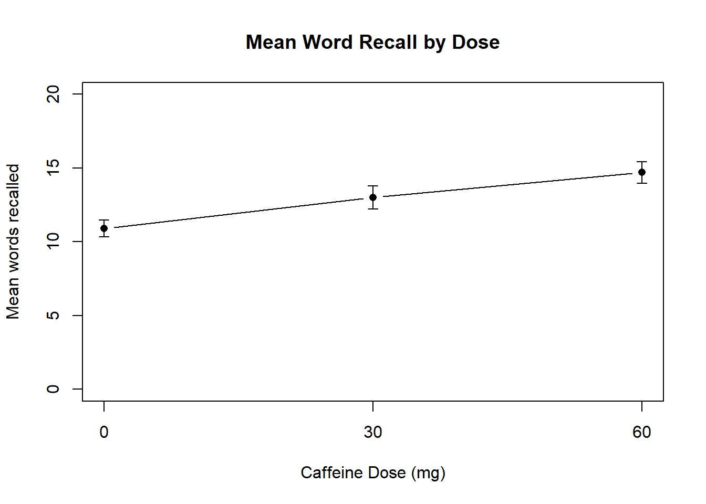
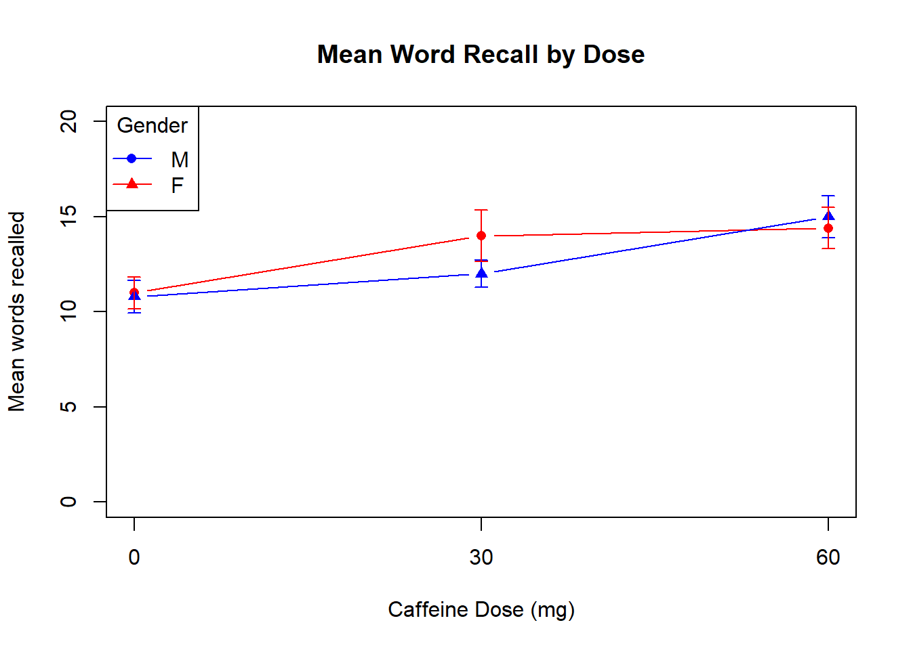

1 + 1[1] 2This document was built using Quarto. Quarto enables you to weave together content and executable code into a finished document. To learn more about Quarto see https://quarto.org.
Below is a snippit of R code that is executed when the document is created.
You can copy these code snippits into your own RStudio to begin to build you own analyses. As you go through the document create a new R script in RStudio and add the code section one after another. By then of this each section you will have built an analysis pipeline for each type of design. You can then use this as a basis for future analyses.
This study looks at the effects of verbal reinforcement on the performance of 8 year old children given a series of fairly simple problems to solve. The independent variable (IV) of verbal reinforcement consisted of three (treatment) levels: positive (praise) for correct responses; negative (criticism) for incorrect responses; and silence regardless of response. The dependent variable (DV) was a measure of the number of simple problems correctly solved before the child decided not to continue. The researcher believed that the different types of reinforcement would differentially influence the number of problems solved by the children. A random sample of 30 eight year old children were selected and randomly assigned to one of the three treatments to form groups of equal size (n=10).
The first thing we need to do is to read the data into R’s memory.
The data is stored in a .csv file which is a common way to store data in psychology. We can use a function called read.csv to read the data from the csv file and assign it to a variable in R’s memory using the assign operator <-. I’ve called this variable data, but you could call it whatever you want. However, the important thing to remember is that whatever you call it you will need to refer to it by the same name whenever we want to use it later in our analysis.
In this case I am reading the file from somewhere on the internet (a Github account), however, if you were reading a file on your computer you would just replace the web address with the file name.
When the data is loaded into R, it is stored as a type of object called a dataframe. This stores data like an excel sheet would do with multiple rows and columns. How this data is organised is an important for how we want to conduct analysis. We will discuss how to change this organisation later. For now let’s look at the top 5 rows of the data using the head function.
Notice that for the head function and with read.csv earlier we put the name of the function and then a pair of brackets (). These () are technically called parentheses to differentiate them from other types of brackets we will come across later. Inside those brackets we put the object or variable that we want the function to operate on, this is called the input to a function. So to use the head function on the input object data we put head(data).
We can see that we currently have 3 columns, Positive, Negative, and Silence with numbers in each column representing how many problems a different child receiving that form of feedback solved.
Normally when analysing and organising our data, every row is what we know about one participant, and every column is a separate bit of information about that participant (called a variable). So the current way this data is organised would be typically of a within-subjects design, in which we had 10 children who each took part in all 3 conditions. However, in the current experiment we have 30 children and each child was only taken part in one condition (randomly assigned). This is called a between-subjects design.
For this design, we know two things about each participant:
• What type of reinforcement they received
• How many problems were correctly solved
We therefore need two columns:
• Condition (reinforcement type)
• Number of problems
Therefore we want to reorganise our data. The basic installation of R and RStudio comes with a thousands of functions. However, we can add to those functions by adding additional packages. You can think of base R as having a mobile phone, it can do some useful things, but to add extra functionality we need to install and load apps.
If we need to install a new package we use the install.packages() function and then give the name of the package we want to install. If we already have a package installed and we want to use it, we need to tell R to load the package and its functions into its list of functions available, just like we need to open and app to use it on our phone. We do this using the library() function, with the name of the package as the input. One extremely useful package for data organisation is called tidyr, so below is the way we load that package.
The tidyr package contains a function called pivot_longer that will do what we want. Like before we will need to give it our data as an input, but we also need to give it some other instructions about how we want it to process our input. All of these inputs are called input arguments and functions in R often take multiple of them which control how the input will be processed.
The first input argument is our data. The second tells it to use all of the columns of our data. The third tells it to take the names of the variables and create a new variable called condition that contains where each bit of data came from. The fourth tells it to get the value for each bit of data and put it in a column called value.
Don’t worry if this seems a lot to handle at the moment, you will get used to this as we use R more.
After reorganising the data we then use the head() function we used earlier to inspect the new arrangement.
# A tibble: 6 × 2
condition value
<chr> <int>
1 Positive 12
2 Negative 11
3 Silence 7
4 Positive 9
5 Negative 8
6 Silence 8We can see that the first three rows of the new data now correspond to the first row of the old data.
Another thing to notice is that for the head() function we didn’t have a <- to the left of it. That is because we just want the function to print something to the screen. However, for the pivot_longer() function we want to use the output of this later. This means we need to assign this output to a variable. So above we have assigned the output of the pivot_longer() to a new variable called dataLong using the assign operator <-. Then when we wanted to use the new variable in the head() function we used it’s name as the input to that function.
One other important thing about data is what type of data we have. In our dataset we have two types: • Condition (reinforcement type) - this is a categorical type
• Number of problems - this is a continuous type
We can’t assume that R will know what these are and we need to check and recode them as the correct types. One way to do this is one column at a time, so we need to access a single column of data within our dataLong object.
The way to do this is to use the $ symbol. So if we want to access only the condition column in dataLong we would write dataLong$condition. We can then pass just this column as a variable to a function called class() that tells us what type of data it is (also called the class of data):
This tells us that is of the data class “character”, this is because it consists of letters instead of numbers. If we check the class of the value column we find it is of a class called integer, which means it is numbers, but only whole numbers with no decimal places.
Understanding what type of data we have is important as some functions won’t work or wouldn’t make sense to use on certain data types. For example we can use the function mean() to calculate the mean of some numeric data like this:
However, if we try this with the character data then we will get a warning and the function will return a value NA:
Warning in mean.default(dataLong$condition): argument is not numeric or
logical: returning NA[1] NANA represents Not Available and is what R uses to represent missing value or invalid values. We will discuss these more later on.
Although the condition column is listed as characters we need to be a bit more specific to let R know that it is a categorical variable instead of just a list of different words that have no relationship to each other. In R categorical data is known as a factor.
We can use a function called factor() to change our condition variable into a factor, importantly doing it this way overwrites the existing condition column with the new factor version. We can then re-check the class of the variable to check it has changed and the levels() function to check that we correctly have our three categories.
[1] "factor"[1] "Negative" "Positive" "Silence" A useful function for getting a quick summary of the data we have is the summary() function:
condition value
Negative:10 Min. : 6.00
Positive:10 1st Qu.: 8.25
Silence :10 Median :10.00
Mean : 9.60
3rd Qu.:11.00
Max. :14.00 For numeric variables it produces various descriptive statistics and for categorical variables is produces the counts in each category.
Often we want to get the descriptive statistics separately for each group, to do this we can use a function called by(), this is a powerful function that allows us to apply another function such as summary() separately for each group.
dataLong$condition: Negative
condition value
Negative:10 Min. : 7.00
Positive: 0 1st Qu.: 9.00
Silence : 0 Median :10.00
Mean : 9.70
3rd Qu.:10.75
Max. :12.00
------------------------------------------------------------
dataLong$condition: Positive
condition value
Negative: 0 Min. : 9.0
Positive:10 1st Qu.:10.0
Silence : 0 Median :11.0
Mean :11.2
3rd Qu.:12.0
Max. :14.0
------------------------------------------------------------
dataLong$condition: Silence
condition value
Negative: 0 Min. : 6.0
Positive: 0 1st Qu.: 7.0
Silence :10 Median : 8.0
Mean : 7.9
3rd Qu.: 9.0
Max. :10.0 Here we ask it to apply the summary() function to the data after separating the data into the different groups specified by the dataLong$condition variable.
Another important way of describing data is to visualise it. R is capable of producing some very beautiful plots such as those that can be seen here https://r-graph-gallery.com/. However, these mostly use other packages that extend the base R functions. We will use these later on but for now we can use the base R functions.
Notice that to create the boxplot we did something new, we specified how we wanted the plot to be created using something called a formula. We will discuss these more in future, particularly when we come to regression, but many R functions can take forumala as inputs.
The way these work is that we put the dependent variable(s) on the left hand side of the tilde ~ symbol and the independent variable(s) on the right hand side. So in this case our formula of value ~ condition is asking how does the value variable change as we change the condition variable. We then provide a second input argument to the boxplot() function which is the data set that we want to check this relationship in.
We can also provide the boxplot() function with other input arguments to change the way the plot appears such as adding a title or changing the colours of the bars, below is an example but please play around with the different options yourself in your own code. The best way to understand what different options there are for a function is to look at the help documentation for that function. In R we can do this putting a ? and then the function name, so in this case ?boxplot
The data in the previous example was a Between Subjects design, where each participant (also called a subject in some terms) only took part in a single condition. We can also analyse data in which participant takes part in multiple conditions.
In this data set a researcher was investigating the effect of caffeine on learning nouns. On 3 consecutive days, participants were given a different dose of caffeine, asked to study a list of 20 new nouns, and then recall them after 15 minutes. The order of caffeine dosing was counterbalanced and testing took place at the same time on separate days. The number of nouns correctly recalled is saved into a csv file that looks like this:
| 0 | 30 | 60 |
|---|---|---|
| 10 | 14 | 16 |
| 11 | 17 | 11 |
| 9 | 15 | 17 |
| 14 | 14 | 15 |
| 12 | 12 | 17 |
| 11 | 11 | 14 |
| 11 | 15 | 13 |
| 13 | 13 | 12 |
| 8 | 10 | 18 |
| 10 | 9 | 16 |
Before we start to analyse a new data set it is a good idea to clear R’s memory of previous data so we have a clean slate. We can do this using this command:
If you are using RStudio, this can also be achieved manually by clicking on the little brush icon at the top of the Environment panel where the variables are listed. However, it is a good idea to learn how to do this with code so that we can build this functionality into our analysis scripts in future.
Here you can see that I have decided to call the dataframe that have assigned the data to df. The choice of variable name is completely up to you and you will often seen df used in example code online or produced by AI. When naming a variable ideally the name should be:
However, the important thing is that whatever you name it, to always use this name when referring to it in your code. A good way to prevent spelling mistakes is to use RStudio’s auto-complete ability, once you start typing a word that it recognises as a function, variable, or file name it will give you a list of options to automatically complete that word.
You can see here that since we have a withing-subjects design with 3 bits of information about each participant our data is already organised correctly. Each row represents one participant with the three columns being the three bits of information we have about them.
We can use the same code as we used before to summarise the data, since we have our data arranged as separate columns we don’t need to use the by() function this time to split them into groups.
X0 X30 X60
Min. : 8.00 Min. : 9.00 Min. :11.00
1st Qu.:10.00 1st Qu.:11.25 1st Qu.:13.25
Median :11.00 Median :13.50 Median :14.50
Mean :10.90 Mean :13.00 Mean :14.70
3rd Qu.:11.75 3rd Qu.:14.75 3rd Qu.:16.75
Max. :14.00 Max. :17.00 Max. :18.00 If we also to know the standard deviation for each dose of caffeine we can use the sd() function and do sd(df$X0) to get the standard deviation of the X0 column for example. However, we can use a function sapply() so apply the sd() function separately to each column and get the answers in one go:
Similarly to when we used by() earlier, the sapply() function takes the data we want to work on as the first input argument (in this case df) and then for a second input argument it takes the name of the function we want to apply (in this case sd()).
A common way of plotting data is to use a line plot in which the line represents the mean of each variable and we then place error bars around this to represent the standard error of the mean (the SEM). There are simpler ways to do this in R using other packages but in base R we can do this like this:
#first get mean and standard deviation of each column and assign to variables
col_means <- colMeans(df) # there is a special function for this but we could use sapply
col_sds <- sapply(df,sd)
plot(col_means, type = "b", #type b means a point and lines connecting them
xaxt = "n", #don't plot a x axis yet, we will add later
xlab = "Caffeine Dose (mg)", #x-axis label
ylab = "Mean words recalled", #y-axis label
main = "Mean Word Recall by Dose", #main title
pch = 16, #point size
ylim = c(0,20)) #limits of the y axis
#add the x axis and labels for each of the doses
axis(1, at = seq_along(col_means), labels = c(0,30,60))
#now calculate the SEM
n <- nrow(df) #get the number of rows (participants)
se <- col_sds / sqrt(n) #calculate SEM using SD divided by squareroot(N)
#add the error bars using the arrows() function, these are mean+-SEM
arrows(x0 = seq_along(col_means), y0 = col_means - se,
x1 = seq_along(col_means), y1 = col_means + se,
angle = 90, code = 3, length = 0.05)
The code here looks more complex but by using the # character I have added comments to it. These are bits of text that are not executed when the code runs so they can be used to explain what is happening and why. It is very good practice to add these throughout your code, partly so other people can read it more easily but also so you can understand it when you come back to it in a few months or years time! Comments appear in a different colour to the code so they are easy to spot.
The caffeine study above was extended, to look at whether gender also had an impact. In this new study, there are therefore two IVs: IV1 – Gender (2 levels: male/female) IV2 – Caffeine (3 doses: 0/30/60mg) DV – number of nouns correctly recalled
We now have two types of IV: Between – gender, as participants are allocated to one group only. Within – dosage, as participants are measured after all 3 doses.
We could just add a gender column to our existing df dataframe. However, as mentioned before it is best to start with a fresh environment at the start of a new analyses. Therefore we will use the command we learnt earlier to clear the environment and then use the code for loading the data set that we used earlier again to re-load the data.
Now we need to add a gender variable. We can create this using the c() function which you might have already spotted being used in a few places earlier. c() is short for concatenate which just means to stick stuff together. It can be used to stick numbers, characters, or many other things. In this case we are going to use it to stick a characters that represent the gender of the participants in this study and create a new variable called gender that contains them. (We are using only two genders here for simplicity of the statistics, not because of any particular point of view about the real world).
It is important before we try and add this data as a new column to our existing data that we check it is the right length, in case we made a mistake when typing it out by hand. Two functions are useful here, length() can be used to find the length of a character vector (or other types of vector or list). A vector is a series of things held together, which has either one row or one column. However, if we apply this to our dataframe df we will see that it only counts the number of columns.
In our data each row is a separate participant so it isn’t the number of columns in df that need to match the length of gender it is the number of rows. To find this out we can use the nrow() function.
We can see that we have the same number of rows in df as we do genders in our gender vector so they are compatible to be stuck together. If these dimensions did not match then we would get an error when we try to concatenate them. We can do this by assigning our gender vector to a new column in df. We previously used the $ symbol to get data out of a dataframe but we can also use it to assign values to a column in a dataframe like this:
Now we can check the number of rows and columns of our df dataframe using a function called dim(), we could do this separately for rows and columns using nrow() and ncol() separately as well.
[1] 10 4[1] 10[1] 4You should also be able to check this visually in the Environment panel where df will be listed as having ‘10 obs. of 4 variables’, however, it is good for us to get used to using code to do things so we can build reproducible analysis scripts.
Now we want to calculate the mean word recalled for each dose (our within subjects IV), but this time we want to do this split by gender (our between subjects IV). However, like in the first between subjects analysis we did, we first need to tell R that the gender variable we have just added to df is a factor and not just a list of unconnected characters.
We can use the table() function to count the numbers of values in each level of our factor like this:
Previously when calculating means split by a grouping variable we used the by() function to apply a function to a dataframe after taking into account different levels of a factor. We can do the same here and apply the colMeans() function split by gender.
However, this produces an error. If we look at the error message it tells us important information about what went wrong. In general as you learn to write code learning how to spot and interpret common errors is one of the main skills, do not see these as a failure on your part, instead they are an opportunity to learn! The error message here tells us that “‘x’ must be numeric”. This is because the colMeans() function only knows how to calculate a mean value of numeric data.
Therefore we only want to get the column means of the numeric data and not our gender variable which is a factor. We can check how our columns are arranged in our df in multiple ways but one is to use sapply() again like before and combine it with the class() function to find the class of each variable in df:
We can see that the numeric data is only in the first 3 columns of df, with the factor variable gender in the fourth. So how can we only get the first three columns of df and pass that as an input to colMeans(). Getting specific bits of data out of objects is called indexing and we will come to more on this later. The way to index into a data frame in R is to use square brackets []. Inside the square brackets we put numbers to indicate the position of the data we want to extract. In this case we want the first three columns and data from all the rows so we would use [,1:3]. The empty space before the comma tells R to get all the rows, and the 1:3 after the comma tells R to get the columns 1 to 3. Don’t worry if this seems confusing at first you will get more comfortable with this with practice and exposure but learning to index is a key skill in coding in any programming language.
So we can combine this indexing technique to overcome the error we had earlier:
df$gender: F
X0 X30 X60
11.0 14.0 14.4
------------------------------------------------------------
df$gender: M
X0 X30 X60
10.8 12.0 15.0 Finally we want to create a graph similar to earlier where we produce a line plot with error bars (representing the SEM), but this time we want to have two separate lines. One for each gender. This is possible to do in base R code as shown below, it is only slightly more complex that the previous graph we built.
mus <- by(df[,1:3], df$gender, colMeans)
#this has to be a bit more complicated sd() can't deal with multiple columns
sds <- by(df[, 1:3], df$gender, function(x) sapply(x, sd))
#calculate the SEMs, sum(df$gender=="F") means to count the number of Fs
semF <- sds$F/sqrt(sum(df$gender=="F"))
semM <- sds$M/sqrt(sum(df$gender=="M"))
plot(mus$F, type = "b", #type b means a point and lines connecting them
xaxt = "n", #don't plot a x axis yet, we will add later
xlab = "Caffeine Dose (mg)", #x-axis label
ylab = "Mean words recalled", #y-axis label
main = "Mean Word Recall by Dose", #main title
pch = 16, #point size
ylim = c(0,20), #limits of the y axis
col = "red")
# add the male line to the same plot
lines(1:3, mus$M, type = "b", pch = 17, col = "blue")
#add the x axis and labels for each of the doses
axis(1, at = seq_along(mus$F), labels = c(0,30,60))
# add SEM error bars for each group
arrows(1:3, mus$M - semM, 1:3, mus$M + semM,
angle = 90, code = 3, length = 0.05, col = "blue")
arrows(1:3, mus$F - semF, 1:3, mus$F + semF,
angle = 90, code = 3, length = 0.05, col = "red")
#add a legend
legend("topleft", legend = c("M", "F"), col = c("blue", "red"),
pch = c(16, 17), lty = 1, title = "Gender")